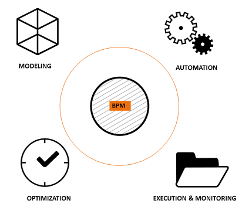
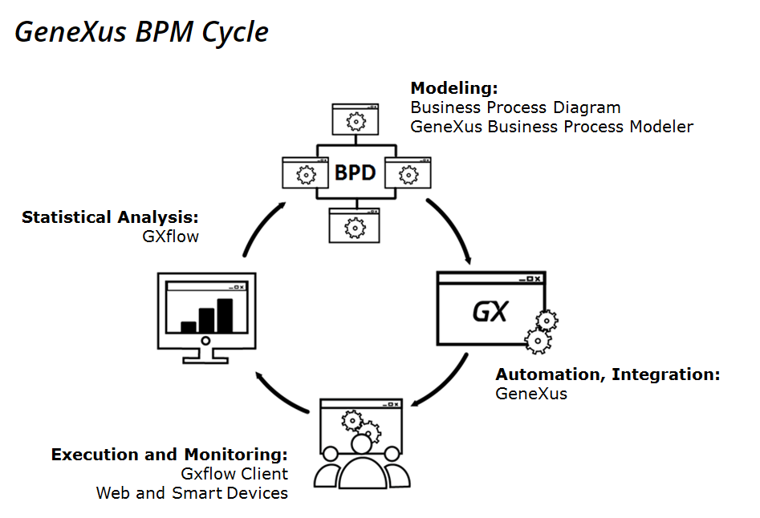

The BPM life cycle is made up of 4 stages in which the activities or tasks that will be developed in a business process are organized, with the objective of understanding, making visible, modeling and controlling these processes.

The BPM cycle starts at the modeling stage with a description of the organization’s business processes. Graphic tools are usually used for a better comprehension of processes.
The following stage corresponds to the automation of the business processes, where we use software tools.
Then comes the execution & monitoring stage of the processes, where we analyze their level of efficiency and locate the bottlenecks to detect changes we could implement to improve them in the following stage to attain the expected results.
The last stage in the cycle consists of optimizing processes according to the assessment made in the previous stage, and so you go into the modeling stage again.
Because it is a cycle, the process-oriented method is an endless project, and the focus lies in the organization’s continued improvements.

This stage focuses on designing the Business Process. This stage may be done in GeneXus using the Business Process Diagram object or the GeneXus Business Process Modeler tool that is installed, free of charge, independent from GeneXus.
To learn how to start modeling a process refer to Getting Started: Modeling a business process.
If you already have business processes developed with another tool and want to integrate them to GeneXus, they must be of the XPDL type. To include them you can use the IDE Import from XPDL Option. It is also possible to export the GX diagrams in XPDL format by selecting the Export to XPDL Option.
Once the business processes are modeled you must make them automatic to advance with the BPM cycle. To accomplish this you develop the GeneXus objects that will later be included in the process.
This stage focuses on the execution and monitoring of the process designed, to validate whether it behaves as expected, and to assess if it is necessary to optimize it. Here, again, you will use GeneXus, since it includes the GXflow client to this end. This client includes both the web mode and Smart Devices.
The GXflow client provides many statistical reports which allow us to evaluate the behavior of our process, and make adjustments on his performance.